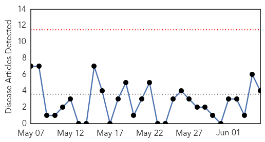
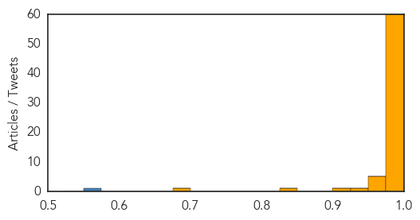

Hepatitis
30-Day Web Trend
0 alerts, 0 warnings

30-Day Twitter Trend
0 alerts, 0 warnings

Article Locations

Article Confidences

Top Articles:
Top Tweets:
-
No tweets found for Jun 05, 2015
MERS
30-Day Web Trend
15 alerts, 2 warnings
30-Day Twitter Trend
11 alerts, 0 warnings

Article Locations
Article Confidences
Top Articles:
- 1.000
- What you need to know about Middle East Respiratory Syndrome
- 1.000
- Newest MERS Cases Raise Fear of Containment Breach
- 1.000
- MERS: Fresh cases, 900 schools closed in South Korea
- 1.000
- MERS: What you need to know about Middle East Respiratory Syndrome
- 1.000
- What is MERS? And Other Questions About the Outbreak
- 1.000
- South Korean MERS outbreak is not a global threat
- 1.000
- Everything You Need to Know About the Middle East Respiratory Syndrome
- 1.000
- US expert says MERS outbreak unlikely to become pandemic in Korea
- 1.000
- What Is MERS, Middle East Respiratory Syndrome? And What You Need To Know About The Deadly Virus
- 1.000
- South Korea MERS cases rise as Seoul's mayor declares 'war' on the virus
- 1.000
- WHO and the Republic of Korea to carry out joint mission for the MERS-CoV outbreak. ~ Friday, 5th June 2015 from 4Hoteliers
- 1.000
- Ministry warns about possibility of spread of MERS from S. Korea to Vietnam
- 1.000
- (Yonhap Interview) MERS outbreak unlikely to become pandemic
- 1.000
- (4th LD) S. Korea reports 4th death from MERS, with 6 new cases
- 1.000
- (3rd LD) S. Korea reports 4th death from MERS, with 5 new cases
- 0.999
- Panic spreads in South Korea as MERS deaths increase
- 0.999
- How Authorities Hope to Keep MERS From Spreading in the US
- 0.999
- WHO: No need for travel advisory over MERS-CoV to and from Seoul
- 0.999
- Newest MERS Cases Raise Fear of Containment Breach
- 0.999
- China's first MERS patient in serious condition
- 0.998
- Strict measures ensure chances of MERS spreading remain low , news, Health News, AsiaOne YourHealth
- 0.998
- Fourth patient dies of MERS; Hundreds of schools cancelled class due to outbreak in South Korea
- 0.998
- Spread of MERS is low, thanks to disease controls- China.org.cn
- 0.998
- China's first MERS patient remains in serious condition
- 0.998
- WHO to take part in mission following MERS outbreak in South Korea - Xinhua
- 0.998
- DH closely monitors additional MERS cases in Saudi Arabia and Oman
- 0.997
- Transparency key to beating MERS
- 0.997
- South Koreans squabble over MERS as more cases appear, Government & Economy
- 0.996
- South Koreans squabble about MERS as more cases appear
- 0.996
- UAE issues travel warning on Korea
- 0.996
- Korea names MERS-affected hospital, tracks all visitors
- 0.996
- China's first MERS patient remains in serious condition
- 0.996
- WHO report implies MERS outbreaks in Saudi hospitals
- 0.996
- South Korea’s MERS Case Total Rises To 41 With 4 Deaths; WHO To Send Team In Joint Mission With Government
- 0.995
- South Korea fighting MERS outbreak
- 0.995
- Virus Kills 4 As Country Works To Contain Outbreak
- 0.995
- Outbreak of MERS-CoV-infection in South-Korea, some facts and advice for travellers
- 0.994
- Gov’t discloses name of ground zero for MERS-INSIDE Korea JoongAng Daily
- 0.993
- MERS In Japan? South Korea Travelers Being Monitored To Protect Against Virus
- 0.992
- Third MERS patient dies in South Korea
- 0.991
- Alarm spreads as South Korea reports more MERS cases
- 0.990
- MERS death toll rises to 446
- 0.990
- S. Korean MERS patient in China 'still in serious condition'
- 0.989
- Untitled Article
- 0.989
- China prepares to tackle MERS
- 0.988
- China Beefs Up Efforts to Tackle MERS
- 0.988
- UN health agency dispatches team to Seoul after fourth death reported from MERS
- 0.988
- UN health agency dispatches team to Seoul after fourth death reported from MERS
- 0.988
- Filipinos in South Korea told to take precautions vs Mers-Cov
- 0.988
- Cambodia Urges Travellers Returning From Middle East, S. Korea To Be Vigilant Over MERS
Showing top 50 articles...
Top Tweets:
- 0.556
- See our latest risk assessment on MERS-CoV; most cases continue to be due to nosocomial infections. https://t.co/d6PONwEkNC